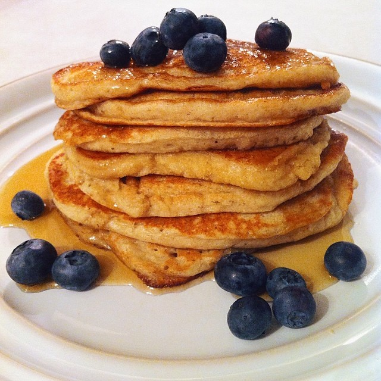

Back to home page
Pancakes

Description
These pancakes are thick and fluffy. They are served with blueberries
and maple syrup,
but please feel free to experiment with the toppings.
Ingredients
- 1 ½ cups flour
- 3 ½ teaspoons baking powder
- 1 tablespoon white sugar
- ¼ teaspoon salt
- 1 ¼ cups milk
- 3 tablespoons butter, melted
- 1 large egg
- 100g blueberries
- 2 tablesppons maple syrup
Steps
- Sift flour, baking powser, sugar and salt together in a large bowl.
- Make a well in the center and add milk, melted butter and egg.
Mix until the batter is smooth.
- Heat a lightly oiled pan over medium-high heat. Pour or scoop the
batter onto the griddle, using approximately 1/4 cup for each pancake.
Cook until bubbles form
-
Flip and cook until browned on the other side. Repeat with the remaining batter.
-
Serve with blueberries and maple syrup.